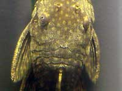

Анциструс
Некоторые рыбы покрыты не чешуёй, а шерстью? При ближайшем рассмотрении у анциструса не видна чешуя. Это больше похоже на мех. У многих рыб действительно нет чешуи. У анциструса чешуйки как раз есть. Они видны при подходящем освещении.

Чешуйки есть